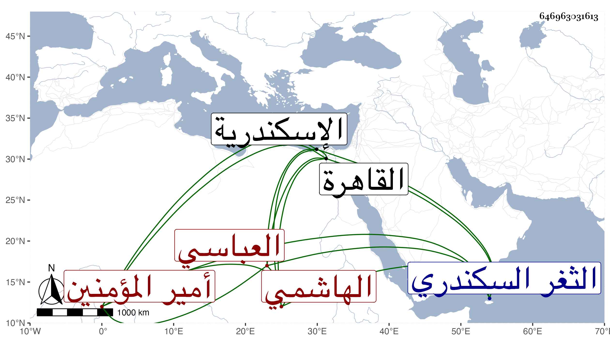

0902Sakhawi.DawLamic.ITO20230111-ara1.EIS1600.646963031613
Biography ID: 646963031613
70
العباس بن محمد بن أبي بكر بن سليمان بن أبي العباس أحمد بن الحسن ابن أبي بكر بن أبي علي بن الحسن أمير المؤمنين المستعين بالله أبو الفضل بن المتوكل على الله بن المعتضد بالله بن المستكفي بالله بن الحاكم بأمر الله الهاشمي العباسي والد يحيى . بويع بالخلافة بعد أبيه بعهد منه في رجب سنة ثمان وثمانمائة واستمر إلى أن أمسك الناصر في أوائل سنة خمس عشرة فاتفق شيخ ونوروز على اقامته للحكم والتولية والعزل بدون سلطان وأقام كذلك إلى أن استقل شيخ بالسلطنة ولقب بالمؤيد فخلعه من الخلافة لكونه لم يوافق على ذلك هذا مع أنه وإن كانت السلطنة أضيفت إليه مع الخلافة فالأمر حقيقة إنما هو للمؤيد وبويع لأخيه داود ولقب المعتضد بالله وبقي هذا بالقلعة يسيرا ثم أرسل به إلى الثغر السكندري فسجن به إلى أن أفرج عنه الظاهر ططر من السجن خاصة وخيره بين القدوم إلى القاهرة أو الاقامة باسكندرية فاختارها لأنه استطابها ، وحصل له مال كثير من التجارة وأذن له في الركوب لصلاة الجمعة وغيرها ، وجهز له فرس بسرج ذهب وكنبوش زركش وبقجة قماش ورتب له هناك في كل يوم ثمانمائة واستمر على ذلك حتى مات في جمادى الآخرة سنة ثلاث وثلاثين بالطاعون شهيدا وهو في أوائل الكهولة ، وقد طول المقريزي في عقوده ترجمته ، وكان خيرا دينا حشما وقورا كريما عنده تواضع وسودد وقد امتدحه شيخنا لما عملوه سلطانا بقصيدة سينية في ديوانه رحمه الله وإيانا .
